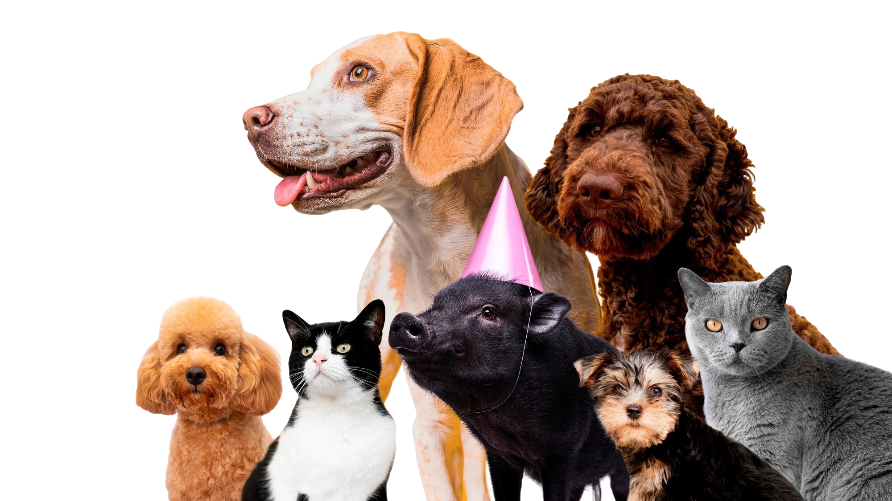

(2).png)
Encontre um Amigo!
Conectamos pessoas e animais em busca de um lar cheio de amor.

Sobre Nós
No Amor em Patas, acreditamos que cada animal merece um lar amoroso e seguro. Nossa missão é facilitar o encontro entre pessoas e animais de estimação que precisam de um lar. Seja você apaixonado por cães, gatos ou outros pets, aqui você encontra uma maneira de mudar vidas!